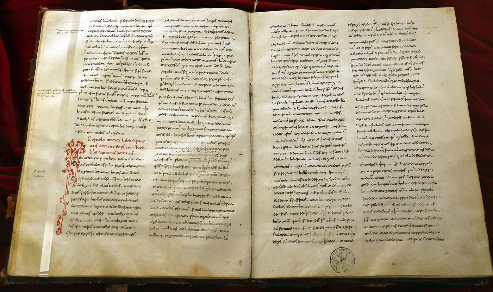

Unit 4 · Boudicca · Lesson 10
The roles of Boudicca and Suetonius Paulinus
One revolt, two leaders, and almost every word about them written by Romans. What did each leader do, and how do historians judge how much it mattered?
Year 11 Ancient History · Present with → or space · Read on a phone with R
Connect · 3 minutes · books closed · everyone writes · press K for the timer
The final battle: what did Tacitus describe?
Name one Celtic fighting method and one Roman tactic Tacitus describes.
Today: the two leaders in that battle, and in the whole revolt. What did each one do, and how much did it matter?
Huge masses of infantry and cavalry, “a vaster host than ever had assembled” (Annals 14.34), charging close in; Boudicca rallies the tribes from a chariot (14.35). Dio, not Tacitus, describes chariots charging the Roman lines (62.12).
A narrow defile with a forest behind, so the enemy could come only from the front (14.34); javelins first, then the legion charges in a “wedge-like column”; cavalry “with extended lances” (14.37).
Learning intentions and success criteria · 2 minutes
Today’s goals
- assess the roles of Boudicca and Suetonius Paulinus in the revolt
- write a body paragraph on Boudicca’s role that resolves its judgement
- explain Boudicca’s role, with evidence from Tacitus and Dio
- explain Suetonius’s role, including his mistakes
- end a paragraph on Boudicca’s role with a resolving sentence that weighs and links back
Syllabus outcomes: AH-11-03 explains the role and significance of forces, features, events, individuals and groups in shaping the past · AH-11-05 analyses different types of sources for evidence to support a historical account or argument · AH-11-06 explains differing interpretations and representations of the past · AH-11-07 communicates historical understanding, applying historical knowledge, terms and concepts. Life Skills: AH-LS-09 identifies different interpretations of the past · AH-LS-11 communicates information about the past using historical terms and concepts.
Note-making · the routine for the whole course
How to structure your notes
questions and key terms, written after
short phrases, arrows (→ leads to), abbreviations (Agr. = Agricola; Ann. = Annals)
- 1A new pageA cue column about a quarter of the page wide; title and date at the top; room for a summary at the bottom.
- 2Listen and look, then writeDon’t copy while a slide is being explained. Phrases, not sentences; a source for every claim.
- 3Write your own notes at the ✎ checkpointThen compare with the model notes, one row at a time. Add what you missed in a second colour.
- 4Write the cue questions afterwardsUse exam verbs: explain, assess. To revise, cover your notes and answer the cues.
- 5Finish with a three-sentence summaryOne checkpoint today: the two leaders in the sources. Your profile grids are notes too.
Key vocabulary · add to the unit word wall
Words for today
| Directive verb (NESA) | Meaning · what the answer does |
|---|---|
| Assess | ‘Make a judgement of value, quality, outcomes, results or size.’ — Make and support a judgement. |
| Writing terms | Meaning |
| Resolving sentence | The last sentence of a body paragraph: it weighs the evidence and links back to the question. |
| Content terms | Meaning |
|---|---|
| Composed speech | A speech written by an ancient historian for a character, showing the historian’s views. |
| Added today | Meaning |
| Role | What a person did in an event, and how far their actions shaped it. |
| Legate | Tacitus’s word for the governor (in full, legatus Augusti pro praetore): the emperor’s deputy in a province, its army commander and chief judge. |
| Profile grid | A table of one person’s decisions, with the evidence, the effect and the source’s perspective for each. |
1 · Two leaders in the sources · I do — two speeches as sources · then cold call
Two speeches before the battle: whose words are these?
Boudicea, with her daughters before her in a chariot, went up to tribe after tribe, protesting that it was indeed usual for Britons to fight under the leadership of women. “But now,” she said, “it is not as a woman descended from noble ancestry, but as one of the people that I am avenging lost freedom, my scourged body, the outraged chastity of my daughters. … This is a woman’s resolve; as for men, they may live and be slaves.”
Tacitus (about 55–120 CE), a Roman senator and historian, Annals 14.35, written about 55 years after the revolt · trans. A. J. Church and W. J. Brodribb (1876)
Nor was Suetonius silent at such a crisis. … “There,” he said, “you see more women than warriors. Unwarlike, unarmed, they will give way the moment they have recognised that sword and that courage of their conquerors, which have so often routed them. … Only close up the ranks, and having discharged your javelins, then with shields and swords continue the work of bloodshed and destruction, without a thought of plunder.”
Tacitus, Annals 14.36, the next chapter · trans. Church and Brodribb

Who wrote these words, and what are they evidence of?
Tacitus did, about 55 years later. No record of either speech survives, and he names none. Each is evidence of how Tacitus saw that leader, and of Roman ideas about a woman leading an army, more than of what either leader said.
1 · Two leaders in the sources · I do — think aloud: reliable for what?
What can a composed speech show?
| Boudicca (Annals 14.35) | Suetonius (Annals 14.36) | |
|---|---|---|
| Tacitus has them say | she fights “as one of the people” for lost freedom and her family; the men may “live and be slaves” | “you see more women than warriors”; close up the ranks, javelins, then shields and swords |
| It shows Tacitus’s view of the leader | a wronged mother and a free Briton with a real cause (he also blames Roman officials: 14.31–32) | a calm, disciplined Roman general: the battle then follows his orders (14.37) |
| It shows Roman views of women leading | a woman at the head of an army needs explaining: she says it is “usual for Britons” | an army with women in it can be despised as “unwarlike” |
| Reliable for … not for … | Tacitus’s view; not her words, and not her plans | Tacitus’s idea of a good general; not Suetonius’s words |
… for I rule over no burden-bearing Egyptians as did Nitocris, nor over trafficking Assyrians as did Semiramis (for we have by now gained thus much learning from the Romans!) …
Cassius Dio (about 155–235 CE), Roman History 62.6, written about 150 years after the revolt; Book 62 survives mainly in a later summary · trans. E. Cary (Loeb, 1925)
Two historians, two different speeches. What does that tell us?
They cannot both be her words: each historian wrote his own. Dio’s Buduica even names two queens from older Greek histories, which shows Dio’s learning, not hers.
1 · Two leaders in the sources · I do — what the sources say Boudicca did · then cold call
Boudicca: what do the sources say she did?
… under the leadership of Boudicea, a woman of kingly descent (for they admit no distinction of sex in their royal successions), they all rose in arms.
Tacitus, Agricola 16 (98 CE), the life of his father-in-law
… the person who was thought worthy to be their leader and who directed the conduct of the entire war, was Buduica, a Briton woman of the royal family and possessed of greater intelligence than often belongs to women.
Cassius Dio, Roman History 62.2, about 150 years after the revolt
Buduica, at the head of an army of about 230,000 men, rode in a chariot herself and assigned the others to their several stations.
Dio 62.8, before the final battle
Boudicea put an end to her life by poison.
Tacitus, Annals 14.37 · trans. Church and Brodribb
… Buduica fell sick and died. The Britons mourned her deeply and gave her a costly burial …
Dio 62.12 · trans. E. Cary (Loeb, 1925)
In the Annals, who leads the attacks on the colony and the towns?
Tacitus names no leader there: only “the barbarians” and “the enemy” (14.32–33). He names Boudicca at the outrages (14.31) and at the battle (14.35, 14.37). In the Agricola, though, the rising under her leadership “burst into the colony itself” (16). Dio says she led the army against the Romans while Paulinus was away on Mona (62.7).
What can none of these sources tell us?
Her own plans and words: every account is Roman, written 37 to 150 years later, and no British account survives. Even her death has two versions.
1 · Two leaders in the sources · I do — what the sources say Suetonius did · then cold call
Suetonius Paulinus: what do the sources say he did?
Thus encouraged, he made an attempt on the island of Mona, as a place from which the rebels drew reinforcements; but in doing this he left his rear open to attack.
Tacitus, Agricola 14 (98 CE)
… he resolved to save the province at the cost of a single town.
Annals 14.33, on Londinium
He chose a position approached by a narrow defile, closed in at the rear by a forest …
Annals 14.34, before the final battle
Had not Paullinus on hearing of the outbreak in the province rendered prompt succour, Britain would have been lost. … Excellent as he was in other respects, his policy to the conquered was arrogant, and exhibited the cruelty of one who was avenging private wrongs.
Agricola 16 · trans. Church and Brodribb
Tacitus says Suetonius decided when to fight and chose his ground. Does Dio agree?
Only in part. Dio never says who chose the ground, but he says Paulinus wanted to put the battle off until, short of food and pressed by the Britons, “he was compelled, contrary to his judgment, to engage them” (62.8). Tacitus stresses his choice; Dio stresses necessity.
Notes checkpoint
Two leaders in the sources
2 · Weighing the roles · We do — pairs complete both profile grids · 5 minutes · then check
Profile grid 1: Boudicca
Both grids are in your booklet: decision · evidence · effect · source and perspective. Use today’s sources and your notes.
| Decision | Evidence | Effect | Source and perspective |
|---|---|---|---|
| Led the rising | “a woman of kingly descent”, under whose leadership “they all rose in arms” (Agricola 16); she “directed the conduct of the entire war” (Dio 62.2) | the Iceni rose, and others with them; the colony was stormed (Annals 14.31–32; Agricola 16) | Tacitus, 98 CE, in a life of his father-in-law; Dio, about 150 years later. Dio calls defeat by a woman Rome’s “greatest shame” (62.1) |
| Led the army against the towns (in Dio) | Dio: she led her army against the Romans while Paulinus was on Mona, and sacked two cities (62.7) | Camulodunum, Londinium and Verulamium destroyed; Tacitus: the enemy was not bent “on making prisoners” (14.33), and his about 70,000 dead is a claim | the Annals name no leader for the attacks; the Agricola puts the attack on the colony under her leadership (16); Dio credits her (62.7) |
| Rallied the tribes before the battle | “went up to tribe after tribe” in a chariot (Annals 14.35); in Dio she “assigned the others to their several stations” (62.8) | “a vaster host than ever had assembled” faced the Romans (14.34), and lost (14.37) | her speech is Tacitus’s composition; Dio’s 230,000 is a claim |
| Her death | Tacitus: poison (14.37); Dio: she “fell sick and died” (62.12) | in Dio, after “a costly burial” the Britons scattered to their homes (62.12) | the two writers disagree; neither says how he knew |
2 · Weighing the roles · We do — check the second grid · 1 minute
Profile grid 2: Suetonius Paulinus
| Decision | Evidence | Effect | Source and perspective |
|---|---|---|---|
| Attacked Mona | “he left his rear open to attack” (Agricola 14) | the revolt broke out in his absence: the Britons were “Relieved from apprehension by the legate’s absence” (Agricola 15) | Tacitus records it, although his father-in-law served on Suetonius’s staff (Agricola 5) |
| Gave up Londinium | “to save the province at the cost of a single town” (Annals 14.33) | his small army survived; Londinium, then Verulamium, was destroyed | Tacitus praises his “wonderful resolution” (14.33); in Dio’s speech for Paulinus, one city was “abandoned to them” (62.9) |
| Fought the final battle | a defile “closed in at the rear by a forest” (14.34); javelins, then the wedge (14.37). Dio: he “was compelled, contrary to his judgment, to engage them” (62.8) | the Romans won (14.37); Tacitus: without him, “Britain would have been lost” (Agricola 16) | Tacitus stresses his choice, Dio necessity; both report the Roman victory |
| After the battle: a harsh policy | his “policy to the conquered was arrogant” (Agricola 16) | many Britons kept fighting, “troubled by the conscious guilt of rebellion and by particular dread of the legate” (Agricola 16) | Tacitus’s own criticism, after praise: “Excellent as he was in other respects” |
2 · Weighing the roles · We do — opinion continuum · 3 minutes · stand where your evidence puts you
Whose decisions shaped the revolt more?
- Choose your place on the line. Stand there.
- Be ready to give two pieces of evidence from your grids, with their sources.
- Say what would change your mind. You may move after you hear others.
two pieces of evidence, each with its writer; which part of the revolt it is about (its start, its spread, the battle, its end); a judgement about the source (whose words, written how much later?); and what evidence would move you. There is no right place on the line: there are better and worse reasons.
3 · You do · Writing focus · 7 minutes · I do → We do → apply
Writing focus: end with a sentence that weighs and links back
Assess: ‘Make a judgement of value, quality, outcomes, results or size.’ NESA, Glossary of key words
A resolving sentence weighs the evidence and links back to the question: the Judge’s degree, said more sharply.
A parallel question: Assess the role of Suetonius Paulinus in the revolt of 60 or 61 CE.
Its Judge: Suetonius Paulinus played a decisive part in the revolt, chiefly through the way he ended it.
Worked example · the same paragraph’s last sentence · written for this lesson
On balance, Suetonius’s absence on Mona let the revolt begin, but his victory, on ground that Tacitus says he chose, ended it, so his role was decisive in its outcome rather than its outbreak.
Why “Tacitus says”? Only Tacitus says he chose the ground, and Dio says Paulinus was forced to fight when he did (62.8), so the choice stays Tacitus’s claim.
Signal that you are weighing
Weigh both sides, one clause each
Link back: the question’s words, the Judge’s degree, sharper
This Resolve only repeats its Judge. Improve it: weigh, then link back.
Assess the role of Petillius Cerialis in the revolt of 60 or 61 CE.
Judge: Petillius Cerialis played only a minor role in the revolt, although his defeat shaped what Suetonius did next.
Resolve: “In conclusion, Petillius Cerialis played only a minor role in the revolt.”
Evidence, from Lesson 7His legion was routed and “all his infantry” destroyed (Annals 14.32). Before giving up Londinium, Suetonius “remembered with what a serious warning the rashness of Petilius had been punished” (14.33).
On balance, Cerialis’s own part was minor, because his legion was routed before the final battle; therefore his role mattered chiefly as a warning that, in Tacitus’s account, helped persuade Suetonius to give up Londinium.
End your paragraph on Boudicca’s role with a resolving sentence: weigh, then link back, in your Judge’s degree. Frame: “On balance, … because …; therefore …” Your Writing toolkit (booklet pages 3–4): the modality scale and degree words.
3 · You do · 4 minutes · deconstruct · check first · plan from your grids · press K for the timer
Assess the role of Boudicca in the revolt.
Your own first draft: no model answers this question. Deconstruct it: what does it ask you to do?
- Verb
- assess: NESA, ‘Make a judgement of value, quality, outcomes, results or size.’ Here: how much her role mattered, not the story of what she did
- Topic
- Boudicca’s role: what she did, and how far it shaped the revolt
- Limits
- the revolt of 60 or 61 CE; the evidence of Tacitus and Dio; her role, not every cause of the revolt
- Do
- one body paragraph, five moves: a Judge with a degree; evidence from Tacitus and Dio, with provenance; analysis of what it shows; an Evaluate that weighs whose words they are; a resolving sentence that weighs and links back
Check first: what must your last sentence do?
Weigh the evidence and link back to the question, in the same degree as your Judge, but sharper. Not a repeat of the Judge, not a summary, and no new evidence.
Circle your degree. Choose one piece of evidence from Tacitus and one from Dio. Note one limit: whose words, written how much later? Then write.
3 · You do · 17 minutes · write · the last 2 minutes: your resolving sentence
Your paragraph: Boudicca’s role in the revolt
- Judge with a degree: how much did her role matter, and for what?
- Evidence: Tacitus and Dio, each with who wrote it and when; short quotations, embedded.
- Analyse what the evidence shows; Evaluate: whose words are these, written how much later?
- Resolve: weigh, then link back, in your Judge’s degree.
When your paragraph is done: assess Tacitus’s portrait of Suetonius. His father-in-law served on Suetonius’s staff, yet he reports the loss of London and the harsh policy. What does that do to his reliability? (Lesson 4 named the family link as a limitation of Tacitus; now test it against what Tacitus actually writes.)
Frames, one per move:
Underline your degree in the Judge and in the Resolve: do they match? Circle one embedded quotation and check its reference.
Check · 5 minutes · self-assess, then swap
Check your paragraph, then swap for warm and cool
Swap with a partner. Write one warm comment (a strength, in the checklist’s words) and one cool comment (one move, and its fix).
“Warm: your [move] … because …” · “Cool: your [move] …; next time, …”
A useful cool comment names the move and the fix: “Your Evaluate names Dio but doesn’t weigh him.”
Then act on one comment: rewrite that sentence now, or at home.
Exit ticket · 2 minutes · before you leave
Your resolving sentence
Copy your paragraph’s resolving sentence. Then improve one thing: the weighing, the link back, or the degree.
a word that signals weighing (On balance, Ultimately); both sides weighed, one clause each (because, but, although); the question’s own words (her role in the revolt); the same degree as the Judge, said more sharply (for what part of the revolt?); and no new evidence.
Then check yourself against today’s three “I can” statements. Next lesson: the aftermath: consequences for the Celts and the Romans.
Finish your notes If time · or at home
Summary: three sentences
- What do Tacitus and Dio say Boudicca did?
- What did Suetonius do, including his mistakes?
- Why are the speeches evidence of the historians’ views more than of the leaders’ words?
Tacitus calls Boudicca ‘a woman of kingly descent’ who led the rising and has her rally the tribes from a chariot, and Dio says she ‘directed the conduct of the entire war’, but neither tells us her own plans, the Annals name no leader for the attacks on the towns, and the two disagree about how she died. Suetonius left the province open by attacking Mona, gave up Londinium ‘to save the province’, then won the final battle, on ground Tacitus says he chose, in a battle Dio says he was forced to fight, before a policy Tacitus calls ‘arrogant’. Both speeches were written by the historians themselves, so they show how Romans imagined these leaders, and a woman leading an army, more than what either said.
Practice and review · 1 of 4 · true, false, justify
True or false? Justify your answer
- 1Tacitus copied Boudicca’s speech from a record made at the battle. False — he composed it, about 55 years later; no record of the speech survives, and he names none.
- 2Dio says Buduica directed the conduct of the entire war. True — Dio 62.2; but Dio wrote about 150 years after the revolt, and Book 62 survives mainly in a later summary.
- 3Tacitus and Dio agree that Boudicca died by poison. False — Tacitus says poison (Annals 14.37); Dio says she fell sick and died, and was given “a costly burial” (62.12).
- 4In the Agricola, Tacitus says Suetonius left the province open to attack when he went to Mona. True — “in doing this he left his rear open to attack” (Agricola 14).
- 5Tacitus and Dio agree that Suetonius chose when to fight the final battle. False — in Tacitus he “prepared to break off delay” and chose his position (Annals 14.34); in Dio he was “compelled, contrary to his judgment, to engage them” (62.8).
- 6Tacitus praises Suetonius’s treatment of the conquered after the battle. False — “his policy to the conquered was arrogant” (Agricola 16), although Tacitus calls him “Excellent as he was in other respects”.
Practice and review · 2 of 4 · writing · deconstruct each question first
Resolving sentences: name the fault, then fix it
Assess the role of the veterans of Camulodunum in the revolt of 60 or 61 CE.
Judge: The veterans of Camulodunum played a large part in the revolt, because their seizures of land gave the Iceni’s neighbours a grievance of their own.
Evidence the paragraph weighedThe Iceni, “Roused by these insults”, “flew to arms”; the veterans “drove people out of their houses, ejected them from their farms” (Annals 14.31).
- “In conclusion, the veterans played a large part in the revolt.”
- “On balance, the veterans were the main cause of the whole revolt.”
- “On balance, the veterans mattered, and the temple of Claudius was hated too.”
A only repeats the Judge. B changes its degree (a large part becomes the main cause). C adds new evidence and does not link back.
On balance, the veterans did not start the revolt, because the Iceni rose first over their own wrongs; therefore their large part lies in why the revolt spread beyond the Iceni.
How useful are the speeches in Annals 14.35–36 for understanding Roman views of women leading armies?
Judge: The speeches in Annals 14.35–36 are very useful for understanding Roman views of women leading armies, because Tacitus composed both of them.
Resolve: On balance, because both speeches are Tacitus’s own work, they tell us little about what either leader said but much about how a Roman senator imagined a woman at war; therefore their usefulness lies in Roman attitudes, not British ones.
Practice and review · 3 of 4 · extension · assess
A father-in-law’s general: how reliable is Tacitus on Suetonius?
… Suetonius Paullinus, a painstaking and judicious officer, who, to test his merits, selected him to share his tent.
Agricola 5, on the young Agricola, later Tacitus’s father-in-law
Suetonius, however, with wonderful resolution, marched amidst a hostile population to Londinium …
Annals 14.33
Excellent as he was in other respects, his policy to the conquered was arrogant …
Agricola 16 · trans. Church and Brodribb
Assess Tacitus’s portrait of Suetonius: his father-in-law served on Suetonius’s staff, yet he reports the loss of London and the harsh policy. What does that do to his reliability?
Tacitus’s portrait of Suetonius is probably more reliable than his family link might suggest, because it records the general’s failures as well as his successes. Suetonius chose Agricola, later Tacitus’s father-in-law, ‘to share his tent’ (Agricola 5), which gave Tacitus a reason to defend him; yet Tacitus writes that the attack on Mona ‘left his rear open to attack’ (Agricola 14), that Suetonius gave up Londinium ‘to save the province at the cost of a single town’ (Annals 14.33), and that his ‘policy to the conquered was arrogant’ (Agricola 16). Criticism from a writer with a reason to praise is harder to dismiss than praise would be. However, Tacitus surrounds each failure with praise: the attack on Mona follows two years of success, the march to Londinium shows ‘wonderful resolution’ (Annals 14.33), and the harsh policy comes after ‘Excellent as he was in other respects’ (Agricola 16). On balance, Tacitus is probably reliable for what Suetonius did, because he records decisions that count against him, but less reliable for how far they should be blamed, because he softens each one with praise.
Practice and review · 4 of 4 · cover your notes and answer from memory
Quick checks
- Who wrote the speeches Boudicca and Suetonius give in the Annals, and what are they evidence of? Tacitus, about 55 years later. They show his view of each leader, and Roman ideas about women leading armies, not what either leader said.
- What does Dio say Buduica did in the war? She “directed the conduct of the entire war” (62.2), led the army against the Romans while Paulinus was on Mona (62.7), and rode in a chariot before the battle, placing her army (62.8).
- How do Tacitus and Dio differ on her death? Tacitus: poison (Annals 14.37). Dio: she fell sick and died, and the Britons gave her “a costly burial” (62.12).
- Name two of Suetonius’s decisions and the effect of each. Any two: he attacked Mona, which “left his rear open to attack” (Agricola 14); he gave up Londinium “to save the province”, and the town was destroyed (Annals 14.33); he fought in a defile with a forest behind and won (14.34–37); after the battle his policy was “arrogant”, and many Britons kept fighting from “the conscious guilt of rebellion” and “particular dread of the legate” (Agricola 16).
- What does NESA say assess means? ‘Make a judgement of value, quality, outcomes, results or size.’
- What must a resolving sentence do? Weigh the evidence and link back to the question, in the Judge’s degree but more sharply, with no new evidence.
Sources and credits
Where everything comes from
Tacitus, Annals 14.29–39: trans. A. J. Church and W. J. Brodribb (1876, public domain), Perseus Digital Library; Tacitus, Agricola 5, 9, 14, 15 and 16: trans. Church and Brodribb (public domain), Perseus (Perseus texts CC BY-SA 3.0 US). Cassius Dio, Roman History 62.1–12 (Epitome of Book 62): trans. E. Cary (Loeb, vol. VIII, 1925), LacusCurtius (public domain in the US; quoted briefly). Herodotus 1.184 and 2.100 (named in the notes): as checked for Lesson 4.
NSW Education Standards Authority, Glossary of key words (definitions quoted word for word). Facts: Livius, “Governor (Roman)” (as saved for Lesson 3); R. Pearse, “Tacitus and his manuscripts”; the statue’s dates as Art UK and the IWM War Memorials Register give them (checked for the unit program), and Wikipedia, “Boadicea and Her Daughters”.
Outcomes and content: NSW Education Standards Authority (NESA), Ancient History 11–12 Syllabus (2024). © NESA.
- Boadicea and Her Daughters, bronze group by Thomas Thornycroft beside Westminster Bridge, London · Photo: Yair Haklai · CC BY-SA 4.0 · source
- Tacitus, Annals, the end of Book 14: the 11th-century manuscript in Florence (Biblioteca Medicea Laurenziana, Plut. 68.2) · Photo: Sailko · CC BY 3.0 · source
- The Menai Strait between Anglesey (Roman Mona) and the mainland of north Wales · Photo: Bob Shires · CC BY-SA 2.0 · source

_e_apuleio_(de_magia,_metamorphoseon,_florida),_montecassino_XI_secolo_(pluteo_68.2).jpg){kind=link}

All images are public domain or openly licensed, and were resized or cropped for the web. Each is shared under the licence shown.